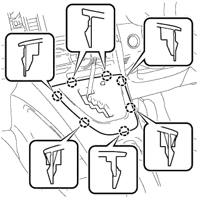
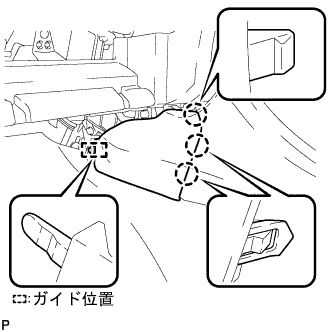
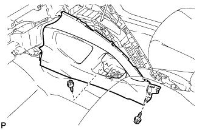
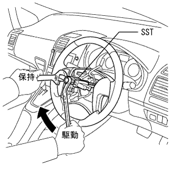
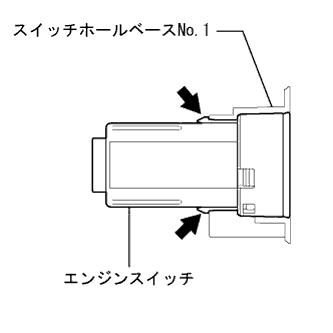

Engine Switch Removal |
| 1. Precaution Removal |
)| 2. Disconnect Battery Negative Terminal |
| 3. Remove Instrument Cluster Finish Panel Assembly |
Operate the tilt lever to lower the steering wheel.
 |
Apply protective tape to the positions shown in the illustration.
 |
Disengage the 9 clips and 2 claws, and remove the instrument cluster finish panel.
| 4. Remove Instrument Panel Finish Panel End RH |
 |
Apply protective tape to the positions shown in the illustration.
Insert a roof molding remover and move it near the clip engagement as shown in the illustration.
 |
As shown in the illustration, pull the roof molding remover with both hands in the direction of the arrow to disengage the clip.
 |
Disengage the 3 clips and remove the instrument panel finish panel end RH.
| 5. Remove Instrument Panel Finish Panel End LH |
 |
Apply protective tape to the positions shown in the illustration.
Insert a roof molding remover and move it near the clip engagement as shown in the illustration.
 |
As shown in the illustration, pull the roof molding remover with both hands in the direction of the arrow to disengage the clip.
Disengage the 3 clips and remove the instrument panel finish panel end LH.
| 6. Remove Shift Lever Knob |
 |
Turn the shift lever knob in the direction of the arrow shown in the illustration and remove it.
| 7. Remove Console Box Cover RR |
 |
Using a thin flat-tip screwdriver wrapped with protective tape, disengage the 2 clips.
 |
Place your hand at the position shown in the illustration and disengage the 2 clips.
Disconnect the connectors and remove the console box rear cover.
| 8. Remove Position Indicator Housing Assembly |
 |
Disengage the 7 claws.
 |
Disconnect the connector and remove the position indicator housing assembly.
| 9. Remove Instrument Panel Finish Panel LWR CTR |
 |
Remove the 2 screws <C>.
 |
Disengage the 6 clips and 4 claws, and remove the instrument panel finish panel LWR CTR.
| 10. Remove Console Box Carpet |
 |
Remove the console box carpet.
| 11. Remove Console Box Assembly RR |
 |
Remove the 4 bolts and 2 screws.
 |
Disengage the 4 claws and remove the console box assembly RR.
| 12. Remove Console Box Insert FR NO.2 |
 |
Disengage the 3 claws.
Disengage the guide and remove the console box insert.
| 13. Remove Console Box Insert |
 |
Disengage the 3 claws.
Disengage the guides and remove console box insert front No.2.
| 14. Remove Box Bottom Mat |
| 15. Remove Instrument Panel Under Tray |
 |
Using a flat-tipped screwdriver wrapped with protective tape, disengage the 4 claws and remove the instrument panel under tray.
| 16. Remove Instrument Panel Finish Panel Lower NO.1 |
 |
Remove the 2 screws <C>.
 |
Disengage the 4 claws and 2 guides.
 |
Pull in the direction of the arrow in the illustration to disengage the 2 clips and guide, and remove instrument panel finish panel lower No.1.
| 17. Remove Instrument Panel Finish Panel Lower NO.2 |
 |
Remove the 2 screws <C>.
 |
Pull in the direction of the arrow in the illustration to disengage the 2 clips and guide, and remove instrument panel finish panel lower No.2.
| 18. Remove Steering Wheel Cover Lower NO.3 |
 |
Disengage the claws and remove the steering wheel cover lower No.3.
| 19. Remove Steering Wheel Cover Lower NO.2 |
 |
Disengage the claws and remove the steering wheel cover lower No.2.
| 20. Remove Horn Button Assembly |
 |
Using a torx socket wrench (T30), loosen the 2 torx bolts until they turn freely.
Using needle-nose pliers, pull out the 2 torx bolts.
 |
Pull the horn button assembly toward the rear of the vehicle.
 |
Using a thin-bladed screwdriver with its tip wrapped with protective tape, release the lock of the airbag connector.
Disconnect the airbag connector and horn connector, and remove the horn button assembly.
| 21. Remove Steering Wheel Assembly |
Operate the tilt and telescopic mechanisms and fix the steering column assembly in its most extended and highest position.
 |
Remove the nut and put matchmarks on the steering wheel assembly and steering column assembly.
 |
Using SST, remove the steering wheel assembly.
| 22. Remove Steering Column Cover |
Release the tilt lever.
 |
Push the steering column cover (lower side) from the left and right to disengage the 4 claws.
 |
Insert a finger through the tilt lever opening of the steering column cover (lower side) and disengage the claw.
 |
Disengage the 2 claws and remove the steering column cover (lower side).
 |
Disengage the 2 claws and pins, and remove the steering column cover (upper side).
| 23. Remove Instrument Panel Under Cover Sub-assembly NO.1 |
 |
Remove the 2 screws, disengage the claws and remove instrument panel under cover NO.1.
| 24. Remove Instrument Panel Airbag Assembly LWR NO.1 |
 |
Remove the 4 bolts.
 |
Detach the instrument lower airbag No.1 from the 6 claws and 2 guides.
 |
Disconnect the connector and remove the instrument lower airbag No.1.
| 25. Switch Hole Base NO.1 Removal |
 |
Disengage the 2 clips and 2 claws.
Disconnect the connector and remove the switch hole base No.1.
| 26. Engine Switch Removal |
 |
Disengage the clips from the back side of the switch hole base No.1 and remove the engine switch.